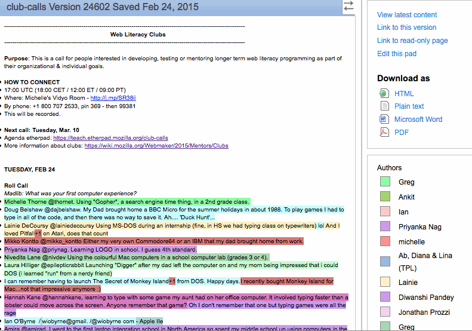

Part of what makes the open community unique is a unique way of working. Mozilla is committed to open not only at the level of technology, but also in terms of how we work -- for decision-making, discussion, working on specific tasks and bugs, communications and community. It's a defining part of our culture and history.
The open community uses tons of different tools to get things done. The How to Work Open article from OpenMatt is a great starter read on why you should work openly, and this module details some of the most popular tools used in the Mozilla community.

Collaborative document writing/editing with chat
Go to http://etherpad.mozilla.org
Go to etherpad.mozilla.org/TYPE-THE-NAME-YOUWANT and give your Etherpad a memorable name. As with all online tools, the lack of connectivity can affect Etherpads ability to function properly! At the end of a large collaborative writing session, export your pad just so you have a hard copy, you know just in case.
Sometimes if you copy and paste a body of text into Etherpad, a hidden character will cause the pad to fail. If the etherpad won’t load for people you try to share it with, this is likely the cause. It’s an annoying bug (and we’re working to fix it).
Since Etherpad allows multiple people to type at once, and records each persons contribution as a color, it’s a great tool for both the development of group work as well as assessment of individual contributions. Have students collaboratively write a research paper, script or synopsis.
The time slider. Watch the evolution of a particular Etherpad by scrubbing the time slider!
Invented before the web, IRC is like a chat program, but cooler.
This video will help you understand the power of IRC, and the Mozilla IRC resource has all the background you need to get set up.
Type /msg and a user name followed by a message and you'll send a private message to whomever has that user name. You can also use IRC as a backchannel when in meetings to ask questions or clarify the speaker's points.
In IRC you can be in a zillion different channels at the same time. It can get overwhelming!
Encourage learners to use IRC to share URLs and animated gifs while working on their projects. It's a quick and easy way to share information, and most IRC programs automatically log conversations, so you can prepare discussion topics, run an online discussion and then use the log to assess participation.
Type /me followed by a message and your message will be printed as a sort of "thought".
Collaborative HTML writing/editing with chat
Go to http://htmlpad.org
Go to htmlpad.org/TYPE-THE-NAME-YOU-WANT and give your HTMLpad a memorable name. As with all online tools, the lack of connectivity can affect HTMLpad ability to function properly! At the end of a large collaborative coding session, export your pad just so you have a hard copy, you know just in case.
HTMLpad is for writing HTML collaboratively. It’s an awesome tool, but after you’ve got your page, you’ll probably want to upload the code to your own server. Learn more about coding, servers and ftp at http://p2pu.org/en/schools/school-of-webcraft/sets/webmaking-101/
Have students collaborate to create a simple webpage for your topic.
The time slider. The time slider. Watch the evolution of collaborative coding by scrubbing the time slider!
A content management system that can do almost anything.
You can set everything up for free at http://wordpress.com
Choose Appearance>Themes and search the thousands of themes to create a beautiful Wordpress site that works for you. Check out http://codex.wordpress.org/WordPress_Lessons to learn about wordpress.
There are thousands of Wordpress plugins that allow you to do everything from setting up an online store to auto tweeting a message at a given time. Plugins are awesome, you should try them out, love them, use them. Just be aware that some plugins conflict with each other. If you install a plugin and your Wordpress starts acting funny, you’re probably experiencing this kind of conflict. Deactiviate plugins one by one and find the culprit! Wordpress is a robust framework. It’s fairly intuitive, but to harness the power of Wordpress, you should really make a commitment to learning it. Take your time, practice, learn together with your students, and know that there are TONS of tutorials out there.
Wordpress can serve you and your students in a million different ways. Using wordpress can allow you to store lesson plans, exercises, ideas, student work, etc to be accessible to anyone anywhere anytime. Don’t want to/can’t have a public site? No problem, with Wordpress you can also have private sites that users log into. Students can interact with each other over the site, trade ideas, images, videos, etc. Wordpress can serve as the infrastructure for entire course.
Impossible to list one. So much awesomeness in this free, open source tool.
Collaborative documents, presentations and spreadsheets right in the browser
Go to http://documents.google.com. Click “Create New Document”.
Google Docs is like Office in your browser, you can format text, insert images, draw diagrams.
To give access to your students, without them having to log in, you’ll have to make the document editable to the public. Make sure you back up important documents!
Have students collaborate to create a presentation using Googles presentation tools
Internet Phone service and Video Chat Client
Go to http://skype.com and download the Skype Client. Choose a skype name and password and then search for your students or colleagues and add them as contacts
Choose Chat>Add People to have a multiperson chat.
Every once in a while some wires get crossed and the people you’re trying to talk to sound like they’re living in a bubbleverse. Hang up, try again, usually the problem corrects itself.
Skype is a great way to have an online discussion. Have a conference call with your students to check in on how they’re doing with a project. Have one on one meetings to discuss group dynamics. Use Skype to show and tell ideas. Suggest Skype for communication during group projects. Combine a Skype Conference call and an Etherpad and take notes of the call.